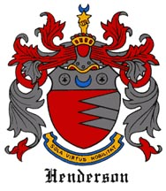
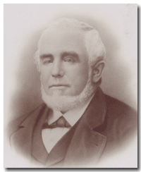

<!DOCTYPE html>
<html lang="en">
<head>
  <meta charset="UTF-8">
  <meta name="author" content="Greg Henderson, info@earthlink.net" />
  <meta name="Keywords" content="Henderson, genealogy, history, Ford, Weaver, Gloor, Boisot, Wells, greg henderson, alexandra fouladi, gregory ford henderson, Duryea, Campbell, Bay Area, home, Bay Area, collecting, Joseph Henderson" />
  <meta name="Description" content="Welcome to the Henderson Family Tree Home page. This Web site traces the family genealogy starting with Captain Joseph Henderson and Angelina Annetta Weaver." />
  <meta property="og:title" content="Joseph Henderson"/>
  <meta property="og:site_name" content="Henderson Family Tree"/>
<!--Greg Henderson, Created on 9/29/99>-->
<!-- Latest compiled and minified CSS -->
<link rel="stylesheet" href="css/bootstrap.min.css" />
<link rel="stylesheet" href="style.css">
 <title>Henderson Family Tree | A genealogy web site</title>
<meta http-equiv="Content-Type" content="text/html; charset=ISO-8859-1" />
<link rel="shortcut icon" type="/fp/image/x-icon" href="http://www.hendersonfamilytree.com" />


<script type="text/javascript">
<!-- hide from old browsers
function MakeArray(n) {
        this.length = n
        return this
}
monthNames = new MakeArray(12)
monthNames[1] = "January"
monthNames[2] = "February"
monthNames[3] = "March"
monthNames[4] = "April"
monthNames[5] = "May"
monthNames[6] = "June"
monthNames[7] = "July"
monthNames[8] = "August"
monthNames[9] = "September"
monthNames[10] = "October"
monthNames[11] = "November"
monthNames[12] = "December"
dayNames = new MakeArray(7)
dayNames[1] = "Sunday"
dayNames[2] = "Monday"
dayNames[3] = "Tuesday"
dayNames[4] = "Wednesday"
dayNames[5] = "Thursday"
dayNames[6] = "Friday"
dayNames[7] = "Saturday"

function customDateString(oneDate) {
        var theDay = dayNames[oneDate.getDay() + 1]
        var theMonth = monthNames[oneDate.getMonth() + 1]
        var theYear = oneDate.getYear()
	// Y2K Fix
   	if ((navigator.appName == "Microsoft Internet Explorer") && (theYear < 2000)) theYear="19" + theYear;

   	if (navigator.appName == "Netscape") theYear=1900 + theYear;
	return theDay + ", " + theMonth + " " + oneDate.getDate() + ", " + theYear
}

function dayPart(oneDate) {
        var theHour = oneDate.getHours()
        if (theHour <6 )
                return "Wee Hours"
        if (theHour < 12)
                return "Morning"
        if (theHour < 18)
                return "Afternoon"
        return "evening"
}
//<meta http-equiv="Content-Type" content="text/html; charset=UTF-8">
// end script hiding -->
</script>

<link href="style.css" rel="stylesheet" type="text/css"/>
<script src="Scripts/AC_RunActiveContent.js" type="text/javascript"></script>
<style type="text/css">
<div id="fb-root">
</div>
</head>

<body bgcolor="#ffffff" text="#000000" link="#000066" vlink="#000066" alink="#00FF00" leftmargin="0" topmargin="0" background="images/hendersonmodern.gif">
<table width="751" border="0" cellspacing="0" cellpadding="0" align="center">
<tr> 
<td height="47" bgcolor="#767676"><a href="http://www.hendersonfamilytree.com/"></a></td>
<tr>
	
<table width="100" border="0" cellspacing="0" cellpadding="0" align="center">


  <tr valign="top" align="left"> 
    <td> 
      <div align="left"></div>
      <table width="751" border="0" cellspacing="0" cellpadding="0">
        <tr valign="top" align="left"> 
          <td width="50" bgcolor="#FFFFFF"><br>
          <br>
         
          </td>
        
<td bgcolor="#FFFFFF"> 
            <table width="100%" border="0" cellspacing="0" cellpadding="10">
			<tr>              </tr>
			<tr>
				 <td><p><br/>
            <p class="maintext">Welcome to the Henderson Family Tree homepage. This Website traces the family genealogy starting
              with Captain Joseph Henderson and his wife Angelina Annetta Weaver.</p>
            <p class="maintext">The coat of arms is one granted to the Henderson
              Scottish Clans. It shows a shield colored red on the left side
              and silver on the right, divided by a jagged horizontal line. At
              the top of the shield is a silver horizontal band on which is a
              blue crescent between two black ermine spots.</p>
            <p class="maintext">The Hendersons have made many contributions to
              American history. Not the least of them was Captain Joseph Henderson
              who was born in Charleston, South Carolina in 1826. He became a
              notable Sandy Hook Pilot in the New York harbor and along the Atlantic
              Coast during the Civil War. <br/>
              <br/>
              To get started, click on any of the links below to view the
              genealogy information for that person in a new page.</p>
          
            <hr width="500" size="2" /> 
			    <ul>
              <li span="span" class="maintext" id="josephenderson"><a href="Joseph.html">Joseph Henderson</a> 1826 - 1890 <br/>
              <span class="maintext" id="angelinaweaver">+<a href="Angelina.html">Angelina Annetta Weaver</a> 1833 - 1909 </span>
              <ul>
                <li class="maintext" id="sarahhenderson"><a href="sarah.htm">Sarah R. Henderson</a> 1850 - 1919 <br/>
                <span class="maintext"John H. Wells 1846 - 1909 </span>  </li>
                <li class="maintext"><a href="maurice.htm">Maurice D. Henderson</a> 1851 - 1923 </li>
                <li class="maintext"><a href="joseph_jr.htm">Joseph Henderson Jr</a>. 1854 - 1908<br />
                <span class="maintext">+Minnie E. Duryea 1856 - 1914</span>
                <ul>
                  <li><span class="maintext"><a href="joseph_henderson_III.htm">Joseph Henderson III</a> 1876 - abt. 1942 <br />
                    +Jennie Strong 1888
                    - abt. 1942 </span>
                    <ul>
                      <li class="maintext">Jennie J. Henderson  1907 - 19?? </li>
                    </ul>
                  </li>
                  <li><span class="maintext"><a href="robert_henderson.htm">Robert
                        B. Henderson Sr.</a> 1878 - 1956<br />
                    +Lillie Elizabeth Castell 1879
                    - abt. 1950 </span>
                    <ul>
                      <li class="maintext"><a href="robert_henderson_Jr.htm">Robert B. Henderson Jr.</a> 1900 - 1941<br />
                        + Anna Mae Snell 1920
                        - 1962 </span>
                        <ul>
                          <a href="robert_henderson_III.htm">Robert Boyd Henderson
                          III</a> 1941 - <br />
                          + Melvyn Vader </span>
                        </ul>
                    </li>
                    </ul>
                  </li>
                  <li class="maintext">Alexander
                      D. Henderson 1880 - 1890</li>
                </ul>
                  </li>
                <!--3rd generation -->
				<li class="maintext"><a href="mary_ann.htm">Mary Ann Henderson</a> 1860
                  - 1947<br />
                  +Charles S. Hendrickson 1859 - 1934 </span>
                  <ul>
                   Angelina Hendrickson 1886 - 1930                  </li>
                  </ul>
                </li>
				<li class="maintext"><a href="angelina_wilcox.htm">Angelina A.
                    Henderson</a> 1863 - 1903 <br />
                  +Frederick Wilcox 1851 - abt. 1932 </span>                </li>
				<li class="maintext"><a href="alecSr/AlexSr.html">Alexander Dawson
                    Henderson Sr.</a> 1865 - 1925 <br />
                  +<a href="Ella_Brown.html">Ella Margaret Brown</a> 1869 - 1940
                  <!--3rd generation -->
                  </span>
                  <ul>
				     <li>Joseph Dawson Henderson 1893 - 1893<br />
                    </li>
				     <li><a href="alecJr/AlexJr.html">Alexander Dawson Henderson Jr.</a> 1895 - 1964 <br />
                      +<a href="Nonny.html">Mary Barnes Anthony</a> 1899 - 2000
                      <ul>
                        <a href="Mary_Ella.html">Mary-Ella Henderson</a> 1922
                        - 2014<br />
                        +Stuart Walter Hinrichs 1920
                        - 1985
                        <!--5th generation-->
                        <ul>
                          <li class="maintext">Robert Stuart Hinrichs 1946 - <br />
                            +Elithabeth Welton 1947 -
                            <!--6th generation-->
                            </span>
                            <ul>
                              <li>Tyler Robert Hinrichs 1968 -  </li>
                              <li>Heather Elizabeth Hinrichs 1970 - </li>
                            </ul>
                            <!--5th generation-->
                            *2nd Wife of Robert S. Hinrichs: <br />
                            +Anne Williams Rider 1950 -    </li>
                        </ul>
                        <ul>
                          <!--5th generation-->
                          <li><a href="Susan_H.html">Susan Hinrichs</a> 1949
                            - <br />
                            +Peter Thomas 1950
                            -
                            <!--6th generation-->
                            <ul>
                              <li>Peter Addenbrook Thomas 1979 -                              </li>
                              <li>Trevor Stuart Thomas 1982 -                              </li>
                              <li>Kristen Alexandra Thomas 1978 -                            </li>
                            </ul>
                        </li>
                        </ul>
                        <!--5th generation-->
                        <ul>
                          <li>>Sarah Hinrichs 1953 -<br />
                            +Steven Victor Lawrence 195? -
                            <!--6th generation-->
                            <ul>
                              <li> Gregory Steven Lawrence 1979 - </li>
                              <li> Christopher John Lawrence 1983 - </li>
                            </ul>
                            <!--5th generation-->
                            *2nd Husband of Sarah Hinrichs:<br />
                            +John WebsterLarson 1941 -                        </li>
                        </ul>
                        <!--5th generation-->
                        <ul>
                          <li><a href="peter.htm">Peter Anthony Hinrichs</a> 1957 - 2016<br />
                            +Susan Elizabeth Sullivan 1958
                            -
                            <!--6th generation-->
                            <ul>
                              <li>Colin Henderson Hinrichs 1995 - </li>
                              <li>Charlotte Anthony Hinrichs 1995 - </li>
                            </ul>
                        </li>
                        </ul>
                        <!--4th generation-->
                        *2nd Husband of Mary-Ella Henderson: <br />
                        +John Sloane Griswold 1914
                        - 2006
                      </ul>
                  </li>
                  </ul>
              </li>
              </ul>
              <span class="maintext">
              <!--4th generation-->
              </span>
              <ul>
                <ul>
                  <ul>
                    <li class="maintext"><a href="alecIII/AlexIII.html">Alexander Dawson Henderson III</a> 1924 - 2020 <br />
                      + <a href="Patricia/Pat_Ford.html">Patricia Ford</a> 1923 - 2024
                      <!--5th generation-->
                      </span>
                      <ul>
                        <li><a href="dawson.html">Alexander Dawson Henderson IV</a> 1951 - <br />
                          +Sharon E Galbreath 1955 -  </li>
                      </ul>
                      <!--5th generation-->
                      <ul>
                        <li><a href="Greg.html">Gregory Ford Henderson</a> 1953
                          - <br />
                          +Susan Patricia Grant</a> 1956 -<br />
                          *2nd Wife of Gregory F. Henderson: <br />
                          +<a href="louise.htm">Louise Zellie Gloor</a> 1960
                          -
                          <!--6th generation-->
                          <ul>
                            <li>Ryan Alexander Henderson 1990 - </li>
                            <li>Christopher Ford Henderson 1992 - </li>
							<li>Sean Murray Henderson 1994 - </li>
                            <li>Leah Louise Henderson 1996 - </li>
                          </ul>
                      </li>
                      </ul>
                      <!--5th generation-->
                      <ul>
                        <li>David Girard Henderson 1955
                          - <br />
                          +Marie Theresa Fanelli 1958 -
                          <!--6th generation-->
                          <ul>
                            <li>Katie Patricia enderson 1982 -   
							   +Amir Mohammad Ghoreichi </li>
							   <ul>
								   <li>Ownen Carl Ghoreichi</li>
							  	</ul>
                            <li>Kelly MarieHenderson 1984 -                          
							  +Michael Studer </li>
							  <ul>
								   <li>Mikko Studer
								  <li>Adelaide Marie Studer</li>
							  	</ul>
                          </ul>
                        </li>
                        <li>*2nd Wife of David G. Henderson: <br />
                          +Lindsay Colleen Levin 1976 -                      </li>
                      </ul>
                      <!--5th generation-->
                      <ul>
                        <li><a href="scott.html">Scott Douglas Henderson</a> 1958
                          - <br />
                          +Sandra Duharte 196?
                          -
                          <ul>
                            <li class="maintext"Annette G. Henderson</a> 2006 - </li>
                            <li class="maintext">Chantal Marion Henderson 2008 - </li>
                          </ul>
                      </li>
                      </ul>
                      <!--5th generation-->
                      <ul>
                        <li>Holly Alexandra Henderson 1963
                          - <br />
                          +Bijan Fouladi </a>1964 -
                          <ul>
                            <!--6th generation-->
                            <li>Farah Fouladi 1993 - </li>
                            <li>Flora Fouladi 1998 - </li>
                        </ul>
                      </li>
                      </ul>
                      <!--4th generation-->
                      *2nd Wife of Alexander D. Henderson III: <br />
                      +Madonna Marie Schaffner 1936 -       </li>
                  </ul>
                  <span class="maintext">
                  <!--3rd generation-->
                  *2nd Wife of Alexander Henderson Jr. <br />
                  +<a href="lucy.html">Lucia Maria Edmondson Ernst</a> 1910 - 1991
                  <!--4th generation-->
                  </span>
                  <ul>
                    <li> <span class="maintext"><a href="Doug.html">Allen Douglas Henderson</a> 1946 - <br />
                      +Cassandra Northway </span>
                      <ul>
                        <span class="maintext">
                        <!--5th generation-->
                        </span>
                        <li><span class="maintext"Lucia Angeline Henderson 1967 - <br />
                          +Adam Levesque</span>
                          <ul>
                            <span class="maintext">
                            <!--6th generation-->
                            </span>
                            <li> <span class="maintext">Haly Henderson Levesque 1998 - </span>                    </li>
                            <li> <span class="maintext">Connor Douglas Levesque 1996 - </span>                    </li>
                          </ul>
                      </li>
                      </ul>
                      <span class="maintext">
                      <!--4th generation-->
                      *2nd Wife of Allen Douglas Henderson: <br />
                      +Barbara Farsang</span></li>
                  </ul>
                </ul>
              </ul>
              <span class="maintext">
              <!--3rd generation-->
              </span>
              <ul>
                <ul>
                  <li><span class="maintext"><a href="Jerry.html">Girard Brown Henderson</a> 1905 - 1983<br />
                    +Theodora Gregson Huntington 1904 - 1979</span>
                    <ul>
                      <li><span class="maintext">Theodora (Terry) G. Henderson 1928 -<br />
                        +Donald Ives
                        1912 - 1978<!--5th generation-->
                        </span>
                        <ul>
                          <li class="maintext">Deirdre Ives 1958 - </li>
                          <li class="maintext">Mark Ives 1959 - </li>
                        </ul>
                      </li>
                      <li><span class="maintext">Dariel Henderson 1933 - 1981<br/>
                        +Bertram Robert Firestone 1931 - 
                        <!--5th generation-->
                        </span>
                        <ul>
                          <li>Mathew Kent Firestone 1964 - </span>  </li>
                          <li>Theodore Huntington Firestone 1966 - </span>  </li>
                          <li>Gregory Welch Firestone 1968 - </span>   </li>
                        </ul>
                        <span class="maintext">
                        <!--4th generation-->
                        </span>                    </li>
                    </ul>
                    <span class="maintext">
                    <!--3rd generation-->
                    *2nd Wife of Girard B. Henderson: <br />
                    +Mary Hollingsworth 1905
                    - 1988 </span>                </li>
         </ul>
              </ul>
            </ul>
              </tr>
            </table>
         
            
        </td>
          <td width="227" bgcolor="#FFFFFF">    
		    <div align="center"><a href="wc_toc.html"></a>    
		      <br />
		    </div>
	       
	    
              
	            <hr align="left" width="200" size="2" /> 
			    <table width="152" border="0" cellspacing="0" cellpadding="0">
			  <tr bgcolor="#663333" bordercolor="#FFFFCC" valign="top" align="left">                </tr>
			  <tr> 
	                <td height="270"><div align="left"><a href="Joseph.html"></a></div></td>
                </tr>
	              <tr> 
	                <td> 
					  <div align="center" class="maintext"><span class="maintext"><a href="Joseph.html">Captain Joseph Henderson</a></span><br />
					  1826-1890</div></td>
                  </tr>
				  <tr><td>
				   <hr align="left" width="200" size="2" />
			  	  <br />
                    
                    
          <a href="Boisot.html"><button type="button" class="btn btn-primary" >Boisot</button><br /><br />
          
          
          
<a href="Ford.html"><button type="button" class="btn btn-primary" >Ford</button>
<br />
<br />
  <a href="Campbell.html"><button type="button" class="btn btn-primary" >Campbell</button><br /><br />
   <a href="Gloor.html"><button type="button" class="btn btn-primary" >Gloor</button><br /><br /> 
     <a href="Stein.htm"><button type="button" class="btn btn-primary" >Stein</button>               <hr align="left" width="200" size="2" /> <br /></a>
                   
<p class="maintext"><strong>Visit these Wikipedia articles:</strong><br />

<a href="http://en.wikipedia.org/wiki/Joseph_Henderson_%28pilot%29" target="_blank">Joseph Henderson</a><br />

<a href="http://en.wikipedia.org/wiki/Alexander_D._Henderson_%28businessman%29" target="_blank">Alexander D. Henderson</a><br />

<a href="http://en.wikipedia.org/wiki/Tirey_L._Ford" target="_blank">Tirey L. Ford</a><br />

<a href="http://en.wikipedia.org/wiki/Emile_Kellogg_Boisot" target="_blank">Emil K. Bosoit</a><br/>

<a href="https://en.wikipedia.org/wiki/Lewis_Francis_Byington" target="_blank">Lewis Francis Byington</a><br />

<a href="https://en.wikipedia.org/wiki/William_Helm" target="_blank">William Helm</a>
                    
</p>

<p class="maintext"><strong>Amazon Books:</strong><br/>
<a href="https://www.amazon.com/Henderson-Family-California-Perfume-Company/dp/1977682049/ref=sr_1_1?s=books&amp;ie=UTF8&amp;qid=1520388097&amp;sr=1-1&amp;dpID=51WvuHbnRRL&amp;preST=_SY291_BO1,204,203,200_QL40_&amp;dpSrc=srch" target="_blank">Henderson Family and the CPC</a><br />

<a href="https://www.amazon.com/Tirey-Lafayette-Ford-Family/dp/198397692X/ref=sr_1_1?ie=UTF8&amp;qid=1520387199&amp;sr=8-1&amp;keywords=Gregory+Ford+Henderson" target="_blank">Tirey L. Ford</a>
<br />         <br />           

					     
			     
                         
 	        </td></tr>
				
              </table>
			  	  	    
			
			
	                  </div>
				
          </tr>
        <tr align="left" valign="top"> 
        </tr>
      </table>
      
      <!--New table -->
  <table width="751" border="0" cellspacing="0" cellpadding="0" align="center">
        <tr bgcolor="#ffffff" align="center" valign="top"> 
          <td height="117">
            <blockquote>
            

                <hr style="border: 2px solid black;" />
                
             
			 <p align="center" ><a href="new.html">What's New</a> | <a href="research.html">About My Research</a> </p>
				
                  <hr style="border: 2px solid black;" />
				
              <blockquote> 
              
                  <p align="center" class="maintext">&copy; 1999-2026 HendersonFamilyTree, All rights reserved. <br>
                      Send questions or comments to <a href="mailto:genealogy@Hendersonfamilytree.com?SUBJECT=Henderson Family Tree&BODY=Dear Greg,">genealogy@hendersonfamilytree.com</a></p>
                      
                     <a href="http://www.facebook.com/pages/Hendersonfamilytree/163703117015164" target="_blank"></a>
					<a href="https://twitter.com/search?q=%23genealogy&src=typd" target="_blank"></a>
					<a href="https://www.youtube.com/watch?v=5xkkGW66SKI" target="_blank">
				  </a><a href="http://instagram.com/gfhrnder/" target="_blank"></a>
<div class="fb-like-box" data-href="http://www.facebook.com/pages/Hendersonfamilytree/163703117015164" data-width="292" data-height="80" data-show-faces="true" data-stream="true" data-header="true"></div>
  
                </blockquote>
              </blockquote>
            </blockquote>
          </td>
        </tr>
</table>
    </td>
  </tr>
</table>

</body>
</html>
